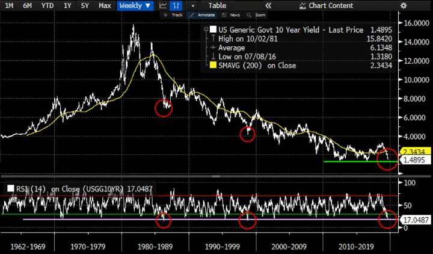
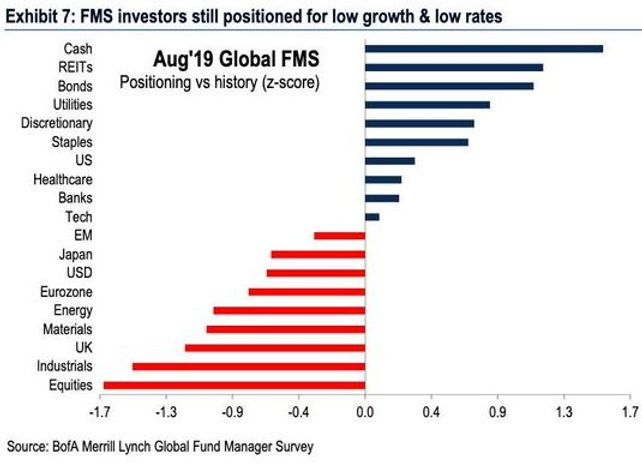
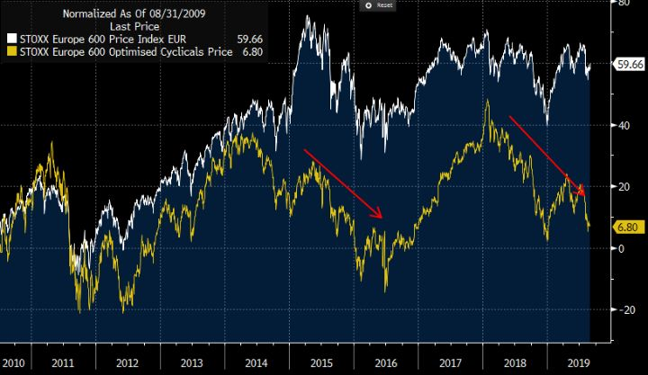
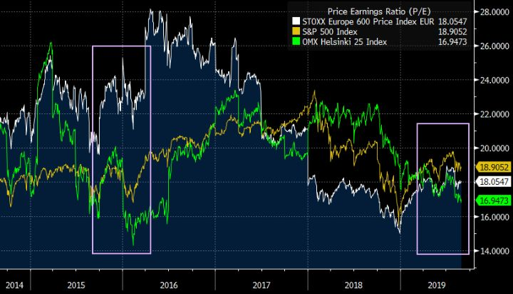
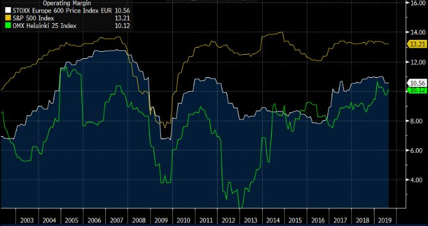
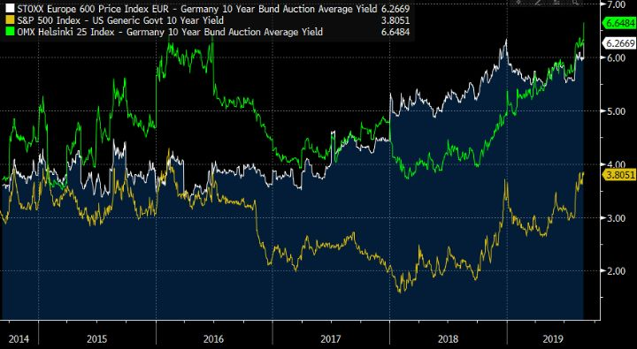

Kun peli ei kulje
Kun peli ei kulje, ota kymppi ja pysy otsikoissa.
Sen täytyy olla lätkäjätkien salainen viisaus. Kymmenen minuutin käytösrangaistus takaa huomion säilymisen, jos ei muilla avuin parrasvaloihin pääse. Kaljaa katsomossa kittaava fanikatsomo ja toiveikkaat potentiaaliset lätkävaimokkeet tykkäävät.
Niin Jere Karalahti kuin myös "Tweeter in Chief" Donald Trump tietävät tämän. Kun peli ei muuten kulje, tai kun saa mielestään ei-toivottua huomiota, strateginen kymppi saa kummasti siirrettyä keskustelua toisaalle.
Peli ei ole kulkenut Trumpilla, ei EKP:lla eikä sen puolin muillakaan keskuspankeilla. Se ei ole kulkenut myöskään politiikoilla. Eikä se liiemmin ole kulkenut myöskään meillä Nomadeilla…
”Within our mandate, the ECB is ready to do whatever it takes to preserve the euro. And believe me, it will be enough.” – Mario Draghi, 26.7.2012
Heinäkuussa tuli kuluneeksi tasan seitsemän vuotta siitä, kun EKP:n pääjohtaja ”Super” Mario Draghi lausui nuo sittemmin kuuluisaksi muodostuneet sanat. Draghi aikoi asettaa markkinoille putin. HEX25-indeksi on tuosta hetkestä ylös 110% ja osingot päälle.
Nyt seitsemän vuotta myöhemmin EKP:n tase on paisunut 4.7 biljoonaan euroon ja sen talletuskorko on painettu 0.4% miinukselle. Näistäkin poikkeuksellista toimista huolimatta talouden kasvutahti on ollut jälleen hidastumaan päin.
Keskuspankit rapakon molemmin puolin ovat reagoineet. Toisella puolen rapakkoa kenties osin presidentin painostuksesta. Tällä puolen rapakkoa kenties koska "TINA" – there is no alternative. Kuten Mikko kirjoitti, on lisä-QE sama kuin käärmettä tunkisi pyssyyn.
Toisin kuin Fed, joka seuraa myös työllisyyden kehitystä, on EKP:lla vain se yksi mandaatti: inflaatio. Euroalueen 5y5y inflaatioswappi oli Draghin vuoden 2012 palopuheen aikoihin ~2.20%. Sen jälkeen se on pelkästään laskenut ollen nyt ~1.20%.
Onhan se ymmärrettävää, että jos on palkattu tekemään yhtä tiettyä tehtävää ja vielä varsin merkittävään, julkiseen rooliin, niin kyllähän sitä tehdään sitten vaikka maailman tappiin. Tuollainen tärkeä rooli jos joku on omiaan myös pönkittämään minää tukevaa arviointivinoumaa.
Ja kun peli ei kulje, tehdään se ainoa mitä osataan, otetaan kymppi ja pysytään otsikoissa.
Mario ei ole enää niin "Super". Hänkin tiedostaa omien keinojensa rajallisuuden. Euroalue kun ei ole pelkästään rahaunioni. Se on myös fiskaali-, talous- ja poliittinen unioni. Siitä Draghikin muistutti jo tuona heinäkuisena torstaina vuonna 2012.
Ei käy kateeksi Draghia tai tulevaa pääjohtajaa Christine Lagardea. Samalla kun heidät on nostettu estradille valokeilaan hyppimään, lavan takana muut tämän Euroalueen poliittisen farssin päähahmot ovat lähinnä keskittyneet taputtelemaan toisiaan selkään.
Finanssikriisin jälkeisen ajan suuri hyve on ollut sittemmin kiroukseksi muodostunut austerity. Rahaunioni oli kaunis ajatus, mutta sen yhteisiä pelisääntöjä ei ole noudatettu alkumetreiltä lähtien. Kenen kuningasajatus sitten oli alkaa noudattamaan niitä tiukan talouspolitiikan periaatteita vuosikymmeniin isoimmasta talouskriisistä ulos yrittäessä? Keynes kääntyisi haudassaan.
Maailmantalous, kauppasota ja demografiset tekijät pidättelevät lainankysyntää. Mutta eniten ongelma on kuitenkin itse talouspolitiikassa, jota lääkkeenä tarjotaan.
Kuten Epsilon Theoryn Ben Hunt on useampaan otteeseen kirjoittanut, lähellä nollaa tai jopa sen alapuolella olevan korkotason signaaliarvo investointipäätöksiä tekeville yrityksille on itse asiassa riskinottokykyyn negatiivisesti vaikuttava.
Alhaiset korot viestivät talouden tilan olevan poikkeuksellinen, eikä mitenkään rohkaisevassa mielessä. Nominaalisen koron pitäisi heijastella reaalisen talouskasvun ja inflaation näkymiä. Psykologisesti olisi tärkeää, että kumpikin näistä olisi jatkossa positiivinen, jotta investointeihin uskallettaisiin lähteä.
Logiikka on päinvastoin, kuin mitä kansantalouden oppikirjat kertovat, ja joiden mukaan keskuspankkiirit ilmeisesti edelleen toimivat. Mitä alhaisempi riskitön korko, sitä alhaisempi vaihtoehtoiskustannus ja täten kynnys investoinnille. Näin sitä luulisi olevan, mutta teoria on teoriaa. Käytäntö on osoittautunut joksikin muuksi.
Tämän käänteisen logiikan vahvisti jo puolitoista vuotta sitten Yhdysvaltojen suurimman yksityisen yhtiön, monialatoimijan Cargillin talousjohtaja Minneapoliksen keskuspankin johtajalle Neel Kasharille. Yritysjohtajan mukaan korkeammat ja täten normaalimmat korot olisivat signaali myös normaalimmasta taloudesta.
Alhaisen koron politiikka on ajanut yritysjohtajat investointien sijaan ostamaan takaisin yhtiöiden omian osakkeita. Epävarmuus huomioiden, se on heille ”no brainer” kuten Ameriikoissa sanottaisiin. Omien osakkeiden ostojen kautta osakekohtainen tuloskasvu on taattu.
Tämä ei missään nimessä ole yleisenä kritiikkinä omien osakkeiden ostoja kohtaan. It is what it is. Mieluummin sitä kuitenkin näkisi yritysten investoivan oman bisneksensä kasvuun.
Sitä myös poliitikot ovat peräänkuuluttaneet; yritysten investointeja. Raha on halpaa! Samaan aikaan he ovat kuitenkin itse vetäneet valtion kassalla vöitä kireämmälle, vaikka: raha on halpaa!
Näyttäkää esimerkkiä! Halpaa, mahdollisimman pitkää rahaa sisään ja julkiset investoinnit käyntiin. Ratsastetaan kaikki yhdessä auringonlaskuun!
Anti-Midas
Takana oli varsin tyydyttävä vuoden alkupuolisko ja hyvä heinäkuu. High-water mark salkullemme nähtiin elokuuhun tultaessa, noin +25%.
Elokuussa peli ei enää kulkenut. Tuntui, kuin kaikki mihin koski muuttui paskaksi. Oman elämänsä anti-Midas. Possa oli joko liian pieni tai väärinpäin. Niin pidemmät positiot, lyhyemmät swingit kuin myös intra-treidit. Mikään ei toiminut. Useampana päivänä kaikki positiot olivat suunnasta riippumatta väärinpäin.
Ihmismieli on hassu, se herkästi kyseenalaistaa kaiken. Onko prosessissa tai miehessä vikaa? Jos kolikkoa kymmenen kertaa heittäessä jokaisella kerralla tulee klaava, ei se kuitenkaan välttämättä tarkoita, että kolikko olisi viallinen.
Tähän tuudittautuen, kuten normaalisti, pienensimme pelipositioita. Kun peli ei kulje, pelataan pienin panoksin. Mutta tulimmeko sitten ottaneeksi sen kympin…
“More money has been lost reaching for yield than at the point of a gun.” – Raymond DeVoe Jr.
Markkinoilla on tänä vuonna nähty jo entisestään eeppisen, vuosikymmeniä kestäneen bondirallin ballistinen loppuhuipentuma. Siitä, kuinka järjetön tilanne mielestämme on, ei tarvitse enempää jauhaa. Olemme siitä kirjoittaneet aikaisemminkin. Pääomat ovat kärsien puhuneet puolestamme.
Olemme siis olleet keväästä asti shorttina (pääosin) eurooppalaisia valtionvelkakirjoja. Samalla olemme olleet myös longina eurooppalaisia pankkiosakkeita. Nämä positiot ovat aiheuttaneet päänvaivaa etenkin nyt elokuussa, jolloin koroissa on ollut selvää shorttaajien puristusta. Longi kultaan (ja pienemmässä määrin hopeaan) on tuonut lohtua. Samoin osakeriskiä on nettona ollut varsin niukasti (suojaukset päällä).
Elokuun aikana kävimme keskustelua itsemme kanssa siitä, mitä näiden korko- ja pankkipositioiden suhteen tulisi tehdä. Yhtäältä trendi ja momentum eivät ole puolellamme. Niitä vastaan liiaksi taisteleminen ei ole prosessimme mukaista.
Vaikka kuinka oikeassa kuvittelee olevansa, ei se tässä pelissä lopulta merkitse yhtään mitään. Markkina ei ole kenellekään mitään velkaa.
Toisaalta, tilanne on niin poikkeuksellinen, että siinä haluaa olla mukana katsomassa miten käy. Riski/tuotto alkaa pikkuhiljaa olla kontraajan puolella. Yleensä pyrimme odottamaan, että hinta vahvistaa teesimme, ja lähdemme vasta sitten mukaan. Nyt tuntuu siltä, että pienikin sentimentin muutos voi saada aikaan aggressiivisen vastaliikkeen, jossa haluamme olla mukana.
Siksi olemme valmiita kestämään lyhyen ajan tuskan ja olemme itse asiassa lisänneet molempiin treideihin. Bondishorttien paino salkusta on nyt noin -75% ja pankkien paino noin +15%.
Olemme myös pienentäneet indeksisuojia ja muutenkin lisänneet syklisiä, kuten energiayhtiötä. Faktoriajatuksena olemme pitkänä arvoa, jota vastaan olemme shorttina bondi-tyyppisiä alhaisen volan osakkeita. Eli juuri päinvastoin, kuin mikä on toiminut viime aikoina. Samoin olemme kasvattamassa kehittyvien markkinoiden painoa. Nettona osakepaino on kuitenkin vain +30%, mutta kuitenkin lähestulkoon ylimmillään koko vuonna.
Painot eivät ole mitenkään aggressiiviset, eivät lähellekään, jotta niillä varsinaisesti otsikoihin pääsisi. Enää ei kuitenkaan puhuta ihan Mikki Hiiri-positioista vaan jopa näkemyksen ottamisesta. (Aina myös luonnollisesti harjoitamme riskinhallintaa matkan varrella, tarkoittaen, että tilanne painoissa elää.)
Jäämme odottamaan sitä, että hintakuva antaisi vahvistuksen.
”Go for the jugular”
1990-luvun alussa Stanley Druckenmiller työskenteli George Soroksen Quantum-rahastossa. Heidän näkemyksensä mukaan Englannin keskuspankki joutuisi devalvoimaan punnan arvon. Kaksikko oli kasvattanut USD1.5bn shorttiposition puntaan. The Atlantic kertoo tarinan:
“Druckenmiller walked into Soros's office and told him it was time to move. He had held a $1.5 billion bet against the pound since August, but now the endgame was coming and he would build on the position steadily.
Soros listened and looked puzzled. "That doesn't make sense," he objected.
"What do you mean?" Druckenmiller asked.
Well, Soros responded, if the Schlesinger quotes were accurate, why just build steadily? "Go for the jugular," Soros advised him.
Druckenmiller could see that Soros was right: Indeed, this was the man's genius. Druckenmiller had done the analysis, understood the politics, and seen the trigger for the trade; but Soros was the one who sensed that this was the moment to go nuclear. When you knew you were right, there was no such thing as betting too much. You piled on as hard as possible.”
Me olemme nyt siinä vaiheessa, kun George ja Stanley olivat heidän vaatimattomalla USD1.5bn possallaan. Vielä emme ole hyökänneet tappoaikeissa kaulavaltimon kimppuun (jugular, suomeksi kaulavaltimo). Se triggeri puuttuu.
Teknisesti bondit ovat railakkaan yliostettuja. Esimerkiksi USA:n 10-vuotisen koron viikkokuvaajan RSI on ollut kuvan aikasarjalla aikaisemmin enemmän ylimyytynä vain kahdesti (eli itse bondit yliostettuina).

Odotuksissa on, että nämä yliostetut tasot korjautuisivat lähiaikoina, jos ei hinnan niin ainakin ajan kautta. Joka tapauksessa korkojen välittömän laskupaineen luulisi odotusarvoisesti hellittävän.
Leading indikaattorit, kuten ostopäällikköindeksit ovat toki heikentyneet selvästi. Edelleen kuitenkin maailman suurimman talouden USA:n tärkein kannattelija eli kuluttaja voi hyvin. Kauppasota rokottaa sentimenttiä, mutta järin suuresta osaa taloutta se ei (vielä) rokota. Samaan aikaan laskenut öljyn hinta enemmän kuin kompensoi negatiivista vaikutusta.
Sentimentti ja uutisvirta on kuitenkin jo täysivaltaisen negatiivista. Jos nyt saamme syvän taantuman ja ison bear-markkinan, täytyy niiden olla historian laajimmin odotetuimmat.
Positiointi on jo viritetty äärimmilleen. Sijoittajat ovat korviaan myöten täynnä bondeja ja niiden kaltaisia, turvallisiksi miellettyjä osakkeita kuten utilities, kiinteistöyhtiöt ja kulutustuotteet. Kukaan ei halua koskea syklisiin ja perinteisen teollisuuden yhtiöihin. Suomessa Elisa, Kesko ja Kojamo maistuvat. Cargotec, Outokumpu ja Nordea eivät niinkään.

Indeksitasolla isompaa bear-markkinaa, jota kaikki odottavat, ei olla nähty. Entä jos olemmekin siinä nyt parhaillaan? Osakkeiden ei ole pakko romahtaa aina taantuman tullen. Korjaus voi tapahtua myös ajan kautta. Jos kuitenkin viimeisen vuoden aikana on omistanut edellä mainittuja inhokkeja, on tuntenut olleensa bear-markkinassa.
Tilanne muistuttaa 2015 syksyä ja alkuvuotta 2016. Tuolloin Kiina-huolet ja öljyn hinnan romahdus saivat Euroopassakin taloussykleille herkät osakkeet muuta markkinaa selvästi syvempään laskuun.

Osakkeiden arvostukset (P/E) eivät ole korkeammalla kuin 2015-16.

Nyt vasta-argumenttina tähän tietenkin, että niin ovat myös yhtiöiden marginaalit ennätystasoilla. Siksi tulokset ovat herkästi laskemassa, jos marginaaleihin tulee painetta, etenkin nyt kun talous hidastuu. Niin marginaalit ovatkin korkealla, mutta eihän inflaation pitänyt olla uhka (raaka-aineet, palkkakustannukset)? Analyytikkokonsensuksen odottamaan merkittävään marginaaliparannukseen näiltä tasoilta emme usko itsekään.

Toisaalta korot ovat tehneet osakkeiden tulostuoton suhteellisesti paljon houkuttelevammaksi. Euroopan ja Suomen yhtiöiden tulostuotto on yli 6% korkeampi kuin mitä ”riskitön” tuotto on. Jos yhtiöiden tulokset pysyvät edes jokseenkin kasassa, on nykyiset tuottotasot huomattavasti houkuttelevammat kuin mitä korkopuolelta on tarjolla.
TINA.

Taantuma jo häämöttää, olemme itsekin sitä mieltä. Se on kuitenkin vain yksi monista vaihtoehdoista. Samoin sen aikataulu ja syvyys ovat vielä kysymysmerkkejä.
Nämä kaikki ovat sarjassamme niitä, joiden lopputulema nähdään vasta peräpeilistä. Tällä hetkellä kuitenkin markkinat tuntuvat fiksaantuneen välittömän ja keskivaikean taantumaan mahdollisuuteen.
Siitä kun Yhdysvaltojen korkokäyrä on ”kääntynyt” niin kuin nyt on käynyt, on kestänyt vielä noin puolitoista vuotta ennen kuin heidän taloutensa on mennyt taantumaan. Siinä välissä osakkeet ovat vielä ehtineet historiallisessa tarkastelussa nousta keskimäärin 15%.
Entä jos Fed pystyykin ennaltaehkäisevällä koronlaskullaan pitämään USA:n nousu-uralla, kuten se onnistui tekemään vuonna 1995? Entä jos vaalien lähestyessä Trumpin pokka pettää ja hän päätyykin sovittelevammaksi?
Me Nomadit tulimme tähän vuoteen varsin varovaisina sekä maailman talouden tilasta että markkinoista. Itsekin hieman yllättyneinä, nyt ikään kuin negaation kautta löydämme itsemme varsin positiivisina riskiasseteille.
Markkinat ja sijoittaminen on suhteellinen peli. Suhteessa yleiseen tunnelmaan, odotuksiin ja etenkin bondimarkkinan hinnoitteluun, emme näe tilannetta niin pelottavana.
Korot indikoivat jo syvää, pitkää taantumaa. Jos sellaista ei saada, on aika hyökätä tappo mielessä. Olemme asemissa.
Disclaimer:
Kolumnit sisältävät mielipiteitä ja mahdollisesti tietoa omista sijoituksistamme, jotka voivat vaihdella päivästä toiseen. Mitään, mitä kirjoitamme ei tule ottaa sijoitussuosituksena. Kuten teksteissämme painotamme, päätökset kannattaa aina tehdä itse. Lukija vastaa itse voitoistaan ja tappioistaan.